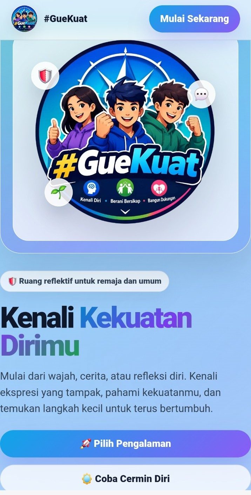
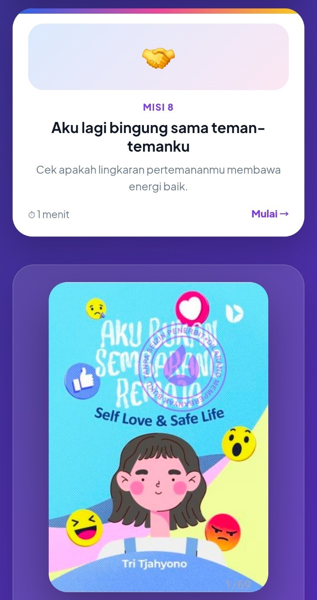
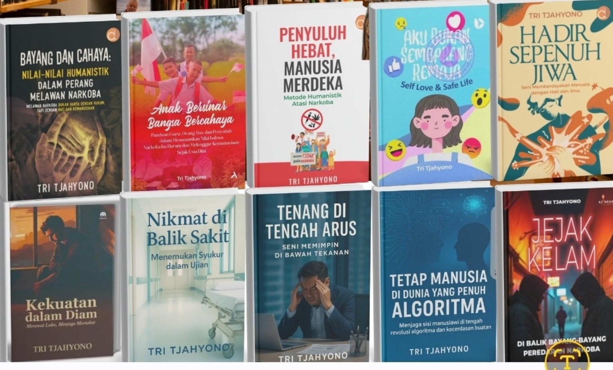

Seorang penyuluh tidak pernah benar-benar selesai belajar. Setiap audience berbeda, setiap generasi memiliki bahasa yang berbeda, dan cara manusia menerima informasi terus berubah. Karena itu, penyuluhan pun tidak boleh berhenti pada teknik, media, atau pola komunikasi yang sama.
Penyuluhan yang Menghadirkan Jiwa
Bagi saya, pengembangan model penyuluhan adalah proses yang tak pernah berhenti. Bukan hanya mencari teknik penyampaian yang menarik, tetapi mencari cara agar penyuluhan mampu menghadirkan jiwa, meninggalkan kesan, dan pada akhirnya membantu seseorang menemukan kekuatan di dalam dirinya sendiri.
Penyuluhan yang baik bukan hanya membuat audience berkata, “Saya sudah tahu.” Lebih jauh: “Saya memahami.” “Saya merasa ini penting bagi saya.” “Saya tahu apa yang harus saya lakukan.” Dan yang paling penting, “Saya menjadi lebih kuat untuk mengambil keputusan yang benar.”
Manusia jarang berubah hanya karena menerima informasi. Pesan menjadi lebih bermakna ketika menyentuh pengalaman, kesadaran, dan makna personalnya.
Dari Lembar Kuesioner Menjadi Pengalaman
Salah satu ruang pengembangan yang menarik adalah bagaimana sebuah lembar kuesioner tidak berhenti menjadi kumpulan pertanyaan dan angka.
Teknologi digital memberikan peluang untuk mengubah instrumen menjadi pengalaman. Pertanyaan dapat dirancang menjadi perjalanan refleksi. Jawaban tidak sekadar menghasilkan skor, tetapi dapat mengajak seseorang mengenali dirinya, memahami kekuatannya, melihat ruang yang masih perlu dikembangkan, kemudian memperoleh pesan yang relevan.

Karena itu, saya mencoba mengembangkan pendekatan digital seperti #GueKuat. Tujuannya bukan sekadar membuat sesuatu menjadi digital. Digital hanyalah medianya. Maknanya tetap berada pada manusia.
Sebuah instrumen menjadi lebih berarti ketika setelah mengisinya seseorang tidak hanya memperoleh angka, tetapi memperoleh kesempatan untuk bertanya kepada dirinya sendiri: “Seberapa kuat saya mengenali diri saya?” “Bagaimana saya menghadapi tekanan?” “Apa yang akan saya lakukan ketika berada dalam situasi sulit?”
Cerita, Refleksi, dan Pengalaman Digital
Pendekatan yang sama saya kembangkan melalui ABS Remaja. Di sini, pesan penyuluhan tidak harus hadir sebagai ceramah yang panjang. Ia dapat hadir melalui cerita, situasi, pilihan, pertanyaan, dan ruang refleksi.

Di titik ini, teknologi menjadi bagian dari proses penyuluhan, bukan sekadar pelengkap. Sebuah pengalaman digital dapat dirancang agar audience tidak hanya menerima pesan, tetapi ikut memikirkan situasi dan pilihannya sendiri.
Dari Penyuluh Menjadi Pembelajar
Ada satu hal lain yang tidak kalah penting: menulis.
Menulis buku bagi seorang penyuluh bukan sekadar aktivitas menghasilkan karya. Menulis adalah proses berhenti sejenak dari kesibukan lapangan untuk bertanya: “Apa yang sebenarnya sudah saya pelajari?”

Dari pengalaman bertemu masyarakat, berdialog dengan remaja, menghadapi berbagai karakter audience, mencoba metode baru, mengalami keberhasilan maupun kegagalan — semuanya dapat menjadi bahan refleksi.
Ketika pengalaman itu ditulis, pengalaman berubah menjadi pengetahuan. Ketika pengetahuan dibagikan, ia dapat menjadi pembelajaran bagi penyuluh lain. Dan ketika pembelajaran terus dikembangkan, lahirlah model-model penyuluhan baru.
Setiap audience adalah guru. Setiap pengalaman adalah bahan belajar. Setiap kegagalan adalah bahan evaluasi. Setiap gagasan adalah kemungkinan model baru.
Penyuluhan yang Terus Bertumbuh
Saya membayangkan penyuluhan ke depan bukan sebagai sesuatu yang kaku. Penyuluhan harus mampu bergerak dari ruang pertemuan ke ruang digital, dari slide ke cerita, dari kuesioner ke refleksi, dari informasi ke pengalaman, dan dari sekadar mengetahui menuju kemampuan mengambil keputusan.
Pada akhirnya, ukuran keberhasilan penyuluhan bukan hanya berapa banyak materi yang selesai disampaikan. Tetapi berapa banyak manusia yang pulang membawa sesuatu dalam dirinya: pemahaman baru, keberanian untuk berkata tidak, kesadaran untuk menjaga dirinya, atau kemampuan menghadapi tekanan.
Karena terkadang, perubahan besar tidak dimulai dari sebuah ceramah yang panjang. Ia dimulai dari satu pesan yang menyentuh, satu pengalaman yang bermakna, dan satu kesadaran yang tumbuh dari dalam diri.
Dan selama manusia terus berubah, pengembangan model penyuluhan juga tidak boleh berhenti.